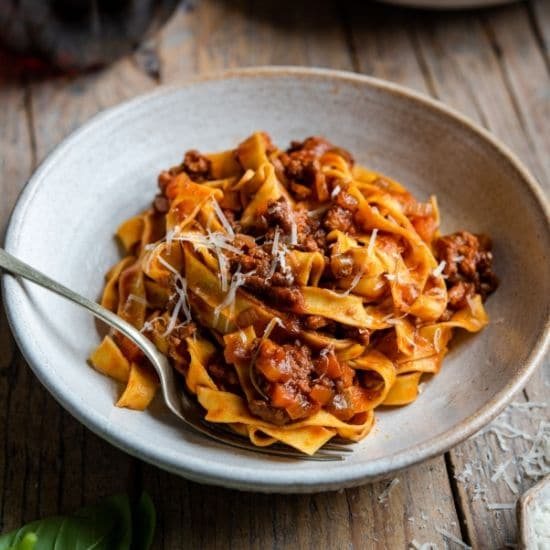

Home
Meat Sauce

Description
Ingredients
- 2 tablespoons extra virgin olive oil
- 1 pound ground beef
- 1 pound ground pork
- 1 cup sofritto
- 1 cup bone broth
- 4 cups homemade tomato passato
- 2 bay leaves
- Kosher salt and freshly ground black pepper, to taste
Steps
- Using a high-sided Dutch Oven head olive oil over medium high heat
- In 1/2 pound batches add the meat to the pot, cook and break up with a wooden spoon until the meat is beginning to brown
- When the last batch of meat is no longer pink, use a slotted spoon to transfer all of the mjeat to a bowl
- Add the sofritto to the now-empty pot and fry for 1 minute, then pour in the broth and use the wooden spoon to scrape up any browned bits
- Return the meat to the pot and add the tomato puree and bay leaves
- Season with a few teaspoons of salt and a teaspoon of pepper
- Bring to a boil then lower the heat to barely simmering, and cook, stirring occasionally, until the sauce is thick and the meat is very soft, about 4 hours
- Season with additional salt and pepper, if necessary
- Enjoy!